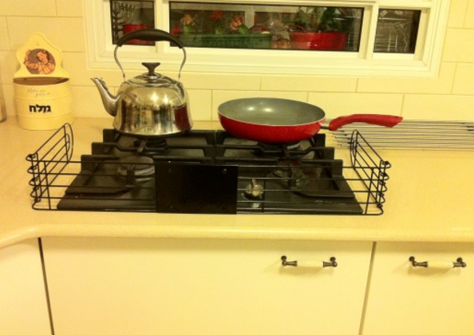

סכנות:
הלהבות שדולקות בכיריים עלולות להתפתח לכדי שריפה של ממש, אם הן מושארות ללא השגחה ראויה – בין אם בגלל הידלקות של מגבת או שיער תוך כדי משחק פזיז, ובין עקב התלקחות של תכולת סיר שהושאר על גבי הכיריים לזמן ממושך, מבלי שדאגתם לכבות אותם בזמן.
פתרונות:
הכלל הראשון במניעת תאונות הוא הקפדה על מתן תשומת לב וצמצום הסחות דעת, לכן רצוי להימנע ככל הניתן מריבוי פעילויות בזמן שהכיריים דולקים. כמו כן, חשוב לצמצם למינימום את כמות האנשים (בדגש על ילדים) שמסתובבים במטבח בזמן הבישול ולהימנע מלבשל עם התינוק על הידיים. הימנעו מהעברת נוזלים מעל לסיר הטיגון המבעבע, כך שלא תיפגעו מכוויות, כתוצאה מכוס מים שהייתה מיועדת לסיר המרק ונשפכה לתוך השמן. חשוב לציין – אם סיר הטיגון שלכם התלקח כתוצאה מהתחממות יתר, אין לנסות לכבות את האש באמצעות מים בשום אופן, הדבר יגרום להתזת השמן הרותח לכל עבר. כאשר מטגנים, חשוב להרחיק את הילדים מהכיריים, על מנת למנוע מצב שבו הם עלולים להפיל את הסיר. השתמשו בסיר עם ידיות קצרות ולא בקלחת, כדי לצמצם את הסיכוי שתיתקלו בידית האחיזה במהלך הטיגון והשמן יישפך. בנוסף קיימים סוגי כיריים חכמים שמקשים על הילד להפעיל אותם בעת לחיצה ומגן מיוחד לכיריים שניתן להתקין סביב הכיריים עצמם מפני ניסיונות מגע של הילד.

סכנות:
התנור חשוף בכל זמן עבודתו לכוויות קטלניות בקרב ילדים. כוויות יכולות להיגרם גם דרך חוסר זהירות של הוצאת תבנית אפייה רותחת מהתנור והנחתה לקירור באזור נגיש לילד.
פתרונות:
רצוי למקם את התנור במקום יחסית גבוה ולא נמוך בגובה הילד ולא להשאיר תבניות חמות עם אוכל שזה עתה יצאו מהתנור ללא השגחה ורצוי במקום גבוה שלא יהיה נגיש לילד.
סכנות:
בפינת האוכל אנחנו מבלים עם הילדים זמן רב וחשוב לאבטח גם אותה כראוי. אנחנו נוהגים למקם אותה במקום מרכזי בבית לרוב ליד חלונות ולקשט במפות וכלי מטבח שבירים.
פתרונות:
בשלב שבו תינוקות מתחילים לזחול ולהתרוצץ בבית הם מנסים גם לעמוד במהרה ולטפס על כל דבר אפשרי ובמיוחד על כיסאות, לכן חשוב שהכיסא לא יהיה במקום קרוב לחלון ושגם החלון יהיה מאובטח בסורגים.
יש לדאוג לכיסא מתאים לתינוק שניתן יהיה לקשור אותו בצורה בטוחה בזמן האוכל.
הסירו מהשולחן את המפות והחליפו אותן במפות אישיות (פלייסמט) שקשה יותר למשוך מהשולחן, או הניחו את הצלחות ישירות על השולחן למניעת נפילות של דברים כבדים או חמים בעת משיכת המפה. אבטחו את פינות השולחן באמצעות מעגלי פינות מפלסטיק או ספוגים.
סכנות:
במטבח קיימות המון דלתות של ארונות ומגירות נגישות שהתינוק עלול לפתוח ולהיחשף לחומרים חדים, שבירים, מסוכנים ורעילים. הוא עלול להיפגע מהדלת עצמה, פעמים רבות קורים מקרים של תפיסת אצבעות ונפילת מגירה עקב היתלות עליה.
ברוב הבתים נמצא לעיתים קרובות ארון חומרי הניקוי ליד פח האשפה מתחת לכיור המטבח, מקום אשר מאוד נמוך ונגיש לילדים קטנים ולרוב עשוי להכיל חומרים רעילים ומסוכנים מאוד כאשר הם באים במגע עם העור, העיניים או דרכי
העיכול והנשימה. בנוסף לכך אנחנו מאחסנים את התרופות במטבח שגם הן מהוות את אותה סכנה לילדים קטנים.
פתרונות:
רצוי להתקין מגירות עם מעצורים אשר ימנעו מהמגירה להיפתח עד הסוף ולא יאפשרו את נפילתה. אותו מעצור משמש
גם הגנה מפני היתפסות האצבעות בעת הסגירה. יש מגירות בעלות מנגנונים מיוחדים המאפשרים להן לשאת עומס של עד 80 ק"ג, פעולה זו תקנה הגנה אם ינסה הילד להיתלות עליה.
קיימים ארונות אשר פתיחתם וסגירתם מתאפשרות רק על ידי לחיצה באזור מסוים. הלחיצה מצריכה הפעלת כוח, אשר
לרוב אינו מצוי ברשותם של ילדים קטנים ובנוסף קיימים גם מנעולים ייעודיים לארונות.
את הדלתות מומלץ לאבזר במתקנים למניעת תפיסת אצבעות, בולמי טריקת דלת, מגני אצבעות על צירי הדלת וניתן לשים חוסם גם לדלת המקרר ומנעולים מיוחדים לנעילת ארונות.
ניתן להימנע מתקריות הרעלה ונגישות לחומרים מסוכנים באמצעות אחסון תרופות, גפרורים וחומרי ניקוי במקום גבוה או נעול. הקפידו לשמור את חומרי הניקוי באריזתם המקורית ולא בתוך בקבוקי מים/פטל שלא יגרום לבלבול לגבי תכולת הבקבוק.
סכנות:
במטבח אנחנו משתמשים במגוון סוגי סכינים חדים ומשוננים היטב לחיתוך סוגי מאכלים שונים. את הסכינים החדים הללו לרוב אנחנו מאחסנים במקום נגיש שיהיה קל לנו לשלוף אותו בזמן הצורך. בנוסף אנחנו מאחסנים כלי זכוכית במקומות נגישים גם כן כמו צלחות, כוסות אשר אלה הם כלים מאוד שמישים במטבח.
פתרונות:
יש לאחסן דברים חדים כמו סכינים, מספריים ופומפייה במקומות גבוהים או נעולים ולהעלים אותם מהשיש. בנוסף חברות המטבחים מציעות כיום פינות אחסון על השיש מוגנות בתריסים חשמליים ומאוד נוחים ונגישים. השתמשו בכלים מפלסטיק כאשר אתם מאכילים את ילדיכם והימנעו מזכוכיות.
סכנות:
לרוב אנחנו מאחסנים מוצרי חשמל על השיש כמו מיקסר, טוסטר, תמי 4 וקומקום חשמלי אשר קרובים לשקע חשמל ולכן נגישים יותר לשימוש. סכנות רבות במוצרי חשמל יכולים להביא להתחשמלות או לכוויות קטלניות. והמון פעמים כאשר אנחנו מכינים לעצמנו אפילו כוס קפה שנדמה שלא מהווה סכנה גם היא עלולה בשנייה אחת של חוסר תשומת לב לכוויה לפעוט.
שטיפת כלים והכוונת הברז למים חמים עשויה גם היא להביא לכוויות.
פתרונות:
מומלץ לקצר את אורך החוט של הקומקום, הפלטה, המיחם או כל מוצר חשמלי אחר על מנת שהילד לא יוכל למשוך בהם
ולהיפגע ואף לאחסן אותם בארונות גבוהים או מאובטחים במנעול. שימו לב שאין לכם מוצרי חשמל בלויים או חוטי חשמל
חשופים שיכולים להוות סכנת התחשמלות ובעלי תו תקן.למניעת התחשמלות יש להתקין מכסים או תקעים בטיחותיים לתקעי החשמל וללמד את ילדכם שיש להיזהר ולהתרחק מנקודות חשמל. יש להרחיק את הקומקום החשמלי מקצה השיש וזכרו להוציא את הכבל מהחשמל בתום השימוש בו.
כיום קיימים מתקני תמי 4 חכמים ומתוחכמים לילדים אשר לא מאפשרים למזוג מים רותחים בלחיצת כפתור פשוטה.
למרות הרצון לשתות כוס קפה והתינוק שמסרב לרדת מהידיים אסור לשתות משקה חם עם התינוק, תנועה פתאומית של התינוק יכולה להוביל לשפיכת הנוזל החם ופגיעה קשה בתינוק ואל תשאירו את הכוס החמה במקום נגיש או על מפת שולחן שגם שאותה התינוק יכול למשוך ולהביא לנפילת דברים עליו.
זכרו בכל פעם לאחר שימוש במים חמים מהברז להחזיר את טמפרטורת המים לפושרים או אם יש באפשרותכם התקינו ברזים
חכמים עם וסתים המולבשים על ברזים או נמצאים בתוך ברזים, הנותנים מענה נקודתי לכל ברז וברז.
ויסות הטמפרטורה בדוד - באופן עקרוני רצוי לכוון את טמפרטורת המים בדוד לטמפרטורה הרצויה. לכן, אם בביתכם דוד חשמלי כוונו את הטמפרטורה ל- 50 מעלות. זה יפתור את בעיית כל הברזים בבית. אם בביתכם דוד שמש, אפשר לרכוש ברז מיוחד שבאמצעותו אפשר לכוון את הטמפרטורה ל- 50 מעלות.